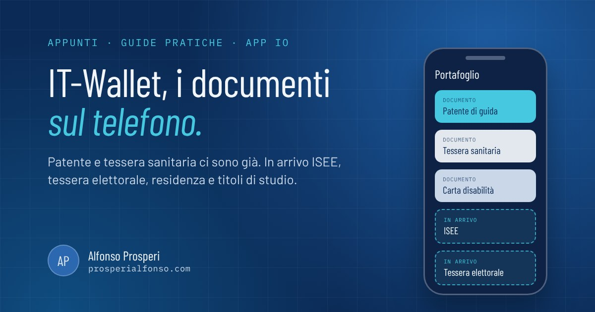

Patente e tessera sanitaria sul telefono le usano già più di dieci milioni di italiani. Ora il Portafoglio dell'app IO si allarga: entro fine 2026 dovrebbero entrare anche ISEE, tessera elettorale, certificato di residenza e titoli di studio. Vediamo cosa c'è oggi, cosa arriva e come prepararsi in pochi minuti.
Cos'è IT-Wallet
IT-Wallet è il portafoglio digitale pubblico italiano. Vive dentro l'app IO, nella sezione Portafoglio, ed è gratuito e volontario: chi lo attiva ottiene la versione digitale di alcuni documenti, con lo stesso valore di quelli fisici. I documenti di carta e plastica restano validi, nessuno è obbligato a passare al digitale.
Dal dicembre 2024 il servizio "Documenti su IO" è aperto a tutti i maggiorenni e, secondo i dati del Poligrafico, le attivazioni hanno superato i 10 milioni, con oltre 17 milioni di documenti caricati.
Cosa puoi mettere nel Portafoglio oggi
- Patente di guida. Valida ai controlli delle forze dell'ordine in Italia: la mostri dall'app, gli agenti la verificano. Serve la connessione, perché uno screenshot non ha valore. All'estero per ora conta solo quella fisica.
- Tessera sanitaria (TEAM). Con codice fiscale e dati per i servizi sanitari.
- Carta europea della disabilità. Per chi ne ha diritto.
I nuovi documenti in arrivo
Le linee guida del sistema IT-Wallet, pubblicate in Gazzetta Ufficiale a luglio 2026, elencano i prossimi documenti previsti per la fase successiva di sperimentazione. Le testate che le hanno lette parlano di arrivo entro fine 2026, ma non c'è ancora una data ufficiale.
- ISEE. Il certificato che serve per bonus, assegno unico, mense e tasse universitarie, pronto da esibire senza cercare il PDF nella posta.
- Tessera elettorale e iscrizione alle liste elettorali, con il certificato di godimento dei diritti politici. Niente più tessera introvabile il giorno del voto.
- Dati anagrafici e attestato di residenza.
- Titoli di studio (diploma e laurea) e iscrizioni a scuola e università.
Un dettaglio pratico: questi documenti non si caricano a mano. Li genera l'ente che li possiede (INPS per l'ISEE, Comune per residenza e tessera elettorale, Ministero dell'Università per i titoli) e l'app li recupera dopo che hai confermato la tua identità. Per i dati anagrafici diverse fonti indicano che servirà un livello di identificazione più alto di SPID, quindi la CIE con l'app CieID. Consiglio: se non l'hai ancora fatto, installa CieID e associa la tua carta d'identità elettronica. Male non fa, anche perché lo SPID è in transizione verso la CIE.
In prospettiva più lunga si parla di passaporto, abbonamenti ai trasporti, biglietti per eventi e portafogli privati di banche e aziende, che da luglio 2026 hanno un ambiente di test aperto.
Come attivare il Portafoglio, passo per passo
- Aggiorna l'app IO dal Play Store o dall'App Store. Serve Android 8 o superiore (oppure un iPhone dal 6s in poi), un telefono con PIN o sblocco biometrico attivo e non modificato (niente root o jailbreak, altrimenti il servizio si disattiva da solo).
- Apri IO e tocca Portafoglio in basso.
- Tocca Aggiungi (l'icona +) e scegli il documento dall'elenco.
- Conferma la tua identità con SPID, CIE con PIN o CieID, poi inserisci il codice di sblocco di IO.
- Controlla i dati a schermo e prosegui. La patente passa dalla Motorizzazione, la tessera sanitaria dal Sistema Tessera Sanitaria: in genere compaiono in pochi secondi.
Toccando un documento vedi la copia fronte e retro, con un QR che gli agenti possono leggere. Attiva lo sblocco biometrico in IO per non dover confermare l'identità a ogni apertura.
Tre cose da sapere
- Ogni 12 mesi l'app ti chiede di riconfermare l'identità con SPID o CIE. Arriva un avviso nel Portafoglio: segui i passaggi e sei a posto per un altro anno.
- Se la conferma fallisce con un errore sui dati anagrafici, i dati in ANPR potrebbero non coincidere con quelli del documento fisico: controlla sul portale ANPR e, se serve, chiedi la rettifica al Comune.
- Puoi disattivare tutto quando vuoi dalle impostazioni della sezione Portafoglio.
In sintesi: attivare il Portafoglio richiede cinque minuti e ti toglie dalla tasca patente e tessera sanitaria. Per i documenti nuovi conviene farsi trovare pronti con CieID installata, così quando compariranno in elenco basterà un tocco.
Fonti
- Dipartimento per la trasformazione digitale, Sistema IT-Wallet
- IO, Documenti su IO
- Assistenza IO, cosa serve per usare Documenti su IO
- Assistenza IO, la conferma dell'identità ogni 12 mesi
- Sky TG24, It-Wallet: in arrivo nuovi documenti sull'app IO (9 settembre 2026)
- Fanpage, It Wallet: Isee, residenza e titoli di studio nel portafoglio digitale (10 settembre 2026)
- SmartWorld, oltre 10 milioni di italiani con IT-Wallet (febbraio 2026)
- SicurAUTO, patente digitale: Italia o estero